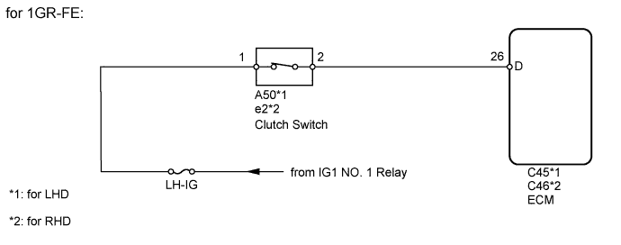
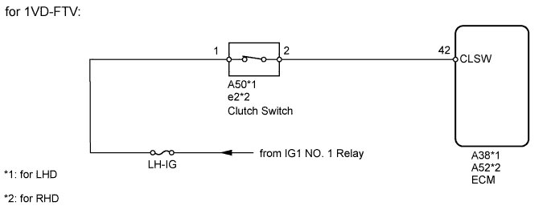
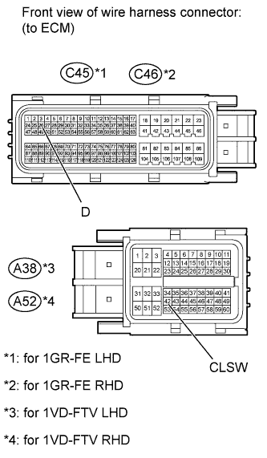
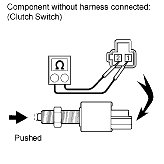
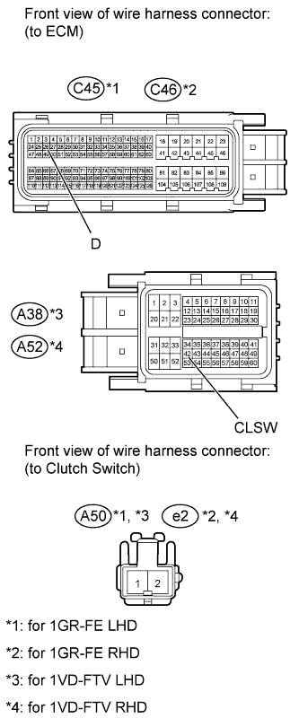

CRUISE CONTROL SYSTEM > Clutch Switch Circuit |


| 1.INSPECT FUSE (LH-IG) |
Remove the LH-IG fuse from the main body ECU.
Measure the resistance according to the value(s) in the table below.
| Tester Connection | Condition | Specified Condition |
| LH-IG fuse | Always | Below 1 Ω |
|
| ||||
| OK | |
| 2.INSPECT ECM |
 |
Disconnect the C45*1, C46*2, A38*3 or A52*4 ECM connector.
Measure the voltage according to the value(s) in the table below.
| Tester Connection | Switch Condition | Specified Condition |
| C45-26 (D) - Body ground | Engine switch on (IG) Clutch pedal depressed | Below 1 V |
| Engine switch on (IG) Clutch pedal released | 11 to 14 V |
| Tester Connection | Switch Condition | Specified Condition |
| C46-26 (D) - Body ground | Engine switch on (IG) Clutch pedal depressed | Below 1 V |
| Engine switch on (IG) Clutch pedal released | 11 to 14 V |
| Tester Connection | Switch Condition | Specified Condition |
| A38-42 (CLSW) - Body ground | Engine switch on (IG) Clutch pedal depressed | Below 1 V |
| Engine switch on (IG) Clutch pedal released | 11 to 14 V |
| Tester Connection | Switch Condition | Specified Condition |
| A52-42 (CLSW) - Body ground | Engine switch on (IG) Clutch pedal depressed | Below 1 V |
| Engine switch on (IG) Clutch pedal released | 11 to 14 V |
|
| ||||
| OK | ||
| ||
| 3.INSPECT CLUTCH SWITCH ASSEMBLY |
Turn the engine switch off.
 |
Disconnect the A50*1 or e2*2 clutch switch connector.
Remove the clutch switch (Click here for LHD, Click here for RHD).
Measure the resistance according to the value(s) in the table below.
| Tester Connection | Switch Condition | Specified Condition |
| 1 - 2 | Pushed (On) | Below 1 Ω |
| Not pushed (Off) | 10 kΩ or higher |
| Result | Proceed to |
| OK | A |
| NG (for LHD) | B |
| NG (for RHD) | C |
Install the clutch switch (Click here for LHD, Click here for RHD).
|
| ||||
|
| ||||
| A | |
| 4.CHECK HARNESS AND CONNECTOR (ECM - CLUTCH SWITCH) |
 |
Disconnect the C45*1, C46*2, A38*3 or A52*4 ECM connector.
Disconnect the A50*1 or e2*2 clutch switch connector.
Measure the resistance according to the value(s) in the table below.
| Tester Connection | Condition | Specified Condition |
| C45-26 (D) - A50-2 | Always | Below 1 Ω |
| C45-26 (D) - Body ground | Always | 10 kΩ or higher |
| Tester Connection | Condition | Specified Condition |
| C46-26 (D) - e2-2 | Always | Below 1 Ω |
| C46-26 (D) - Body ground | Always | 10 kΩ or higher |
| Tester Connection | Condition | Specified Condition |
| A38-42 (CLSW) - A50-2 | Always | Below 1 Ω |
| A38-42 (CLSW) - Body ground | Always | 10 kΩ or higher |
| Tester Connection | Condition | Specified Condition |
| A52-42 (CLSW) - e2-2 | Always | Below 1 Ω |
| A52-42 (CLSW) - Body ground | Always | 10 kΩ or higher |
|
| ||||
| OK | ||
| ||